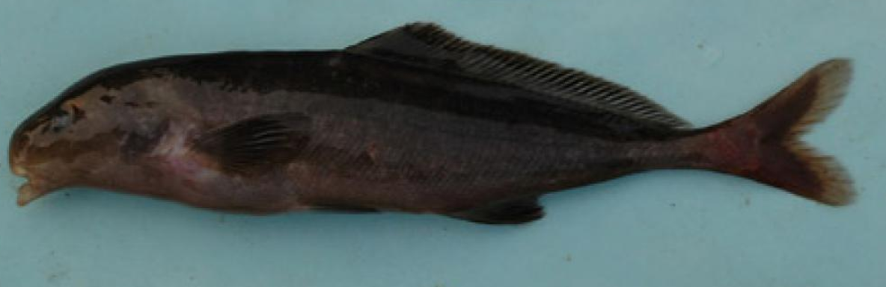
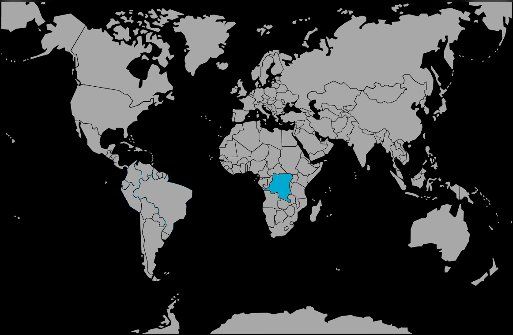

Systématique
- Ordre : Osteoglossiformes
- Famille : Mormyridae
- Genre : Myomyrus
- Espèce : M. macrodon

Myomyrus macrodon est un poisson d'eau douce de la famille des Mormyridae, endémique du bassin du fleuve Congo en Afrique centrale. Décrit par Boulenger en 1898, il appartient à un genre caractérisé par une morphologie dentaire spécifique et une silhouette benthique adaptée à la vie sur le fond.
Cette espèce peut atteindre une taille adulte d'environ 22 à 28 cm. Le corps est allongé, modérément comprimé latéralement, avec un dos légèrement voûté. La coloration est généralement uniforme, allant du gris plomb au brun foncé avec des reflets métalliques. Comme tous les membres de sa famille, il possède un organe électrique situé dans la queue, capable de produire des champs électriques de faible intensité pour se repérer et communiquer.
Sa tête est munie d'un museau court et arrondi, et comme son nom l'indique (macrodon signifiant "grandes dents"), sa dentition est proportionnellement robuste par rapport à d'autres genres de la famille. Les nageoires sont translucides à sombres, la nageoire dorsale étant significativement plus courte que la nageoire anale.
Myomyrus macrodon est une espèce nocturne qui utilise l'électrolocalisation pour s'orienter dans les eaux sombres ou turbides. Durant la journée, il reste inactif, caché dans des anfractuosités rocheuses ou sous des amas de bois mort.
C'est un poisson territorial qui peut se montrer agressif envers les autres Mormyridés s'ils partagent le même espace restreint, car leurs signaux électriques peuvent interférer. En dehors de cette sensibilité aux champs électriques, il demeure indifférent aux autres espèces non électriques. C'est un fouisseur qui utilise son museau sensoriel pour détecter des proies microscopiques ou des larves enfouies dans le substrat.
Mode : Aucune information précise documentée.
Comme pour la majorité des espèces du genre Myomyrus, la reproduction en captivité n'a jamais été observée ni documentée avec succès. En milieu naturel, elle est probablement synchronisée avec les variations saisonnières du débit d'eau et de la conductivité, facteurs cruciaux pour la transmission des signaux électriques lors des parades nuptiales. On suppose qu'ils déposent leurs œufs dans des zones protégées ou des fentes rocheuses.
Dimorphisme sexuel : Aucune information externe fiable. Chez certains Mormyridae, le bord de la nageoire anale peut présenter une courbure différente chez le mâle, mais ce trait n'est pas formellement confirmé pour cette espèce.
Espérance de vie : Probablement entre 6 et 10 ans en captivité si les conditions environnementales sont optimales.
L'espèce fréquente les eaux du fleuve Congo, notamment dans les zones de rapides ou les biefs rocheux où l'eau est fortement oxygénée. Elle affectionne les fonds composés de sable grossier, de gravats ou de roches offrant de nombreuses cachettes.
L'eau y est typiquement douce et de pH neutre à légèrement acide. Contrairement à certains mormyres de zones stagnantes, M. macrodon semble préférer les habitats où le renouvellement de l'eau est constant, garantissant une faible accumulation de déchets azotés.
Répartition

Origine naturelle :
- Afrique : Bassin du fleuve Congo.
- Localisation : République Démocratique du Congo (RDC).
- On le retrouve principalement dans le cours principal du fleuve et certains de ses affluents majeurs.
Considérée comme une espèce de "Préoccupation mineure" (LC) par l'UICN en raison de sa large aire de répartition, bien qu'elle soit rarement collectée pour l'exportation.
Paramètres de maintenance
Température : 23 à 27 °C.
pH : 6,5 à 7,5.
GH : 5 à 12 °dGH.
Courant : Modéré à fort ; nécessite une excellente oxygénation et une filtration performante.
Volume conseillé : Minimum 400 litres pour un sujet adulte. Un substrat de sable fin est fortement recommandé pour éviter les blessures au museau lors de la recherche de nourriture.
Régime alimentaire
Régime : Carnivore benthophage.
Se nourrit essentiellement de larves d'insectes, de vers aquatiques (oligochètes) et de petits invertébrés capturés dans ou sur le substrat.
En aquarium, il nécessite des proies vivantes ou congelées (vers de vase, tubifex, artémias). Il peut être difficile à habituer aux aliments secs et doit souvent être nourri à la tombée de la nuit pour compenser sa timidité.